Soft Headed Tornado
10 Nov 2015
From the very first time the cam shaft caps were re-installed, it was realised that the aluminium used in the head casting
was not as hard as it needed to be. The specified 13 Nm of torque was right on the edge of stripping the thread. It
could be felt moving under the strain.
After several rounds of valve shim changes, the maximum safe torque was down to 10 Nm.
At 52,358 km, all of the cam cap holes had to be heli-coiled using M6x3D coils, as the threads had
finally pulled free. The standard bolts were re-used, but torqued to 12 Nm.
At 93,354 km, the cam bridge holes were heli-coiled using M6x3D coils, as these threads were about to pull free.
At this stage, 12 off M6x1x49.5 R8.8 threaded rods were installed into the cam cap holes with Loctite 243, and Class 10 flanged nuts used to
hold the caps down. These were only available with a serrated surface so this was ground flat.
At the time it wasn't known for sure if the bridge could be removed over threaded rods, so the existing bolts were re-used.
At 109,612 km, 4 off M6x1x66.5 R8.8 threaded rods were installed into the bridge holes with Loctite 243 to complete the transformation.
The Plot Thickens
When the head was taken off at 109,612 km, to fix a slight inlet valve leak
it was quite difficult to slide the head over the studs and had to be levered off.
The cause of this was, of the eight stud holes in the head, the four corner holes had elongated and contracted, and the two inner holes
on the inlet side had contracted. All of the contractions had reduced the hole size to below 10.0 mm within the top 3 mm of the hole.
As well as this, the material compression was not uniform, having tilted towards the weaker side.
| 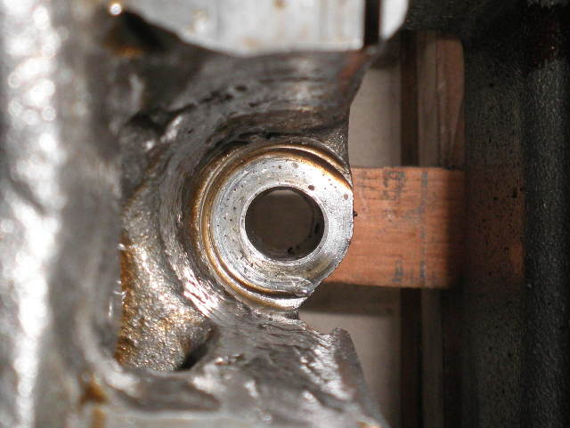 |
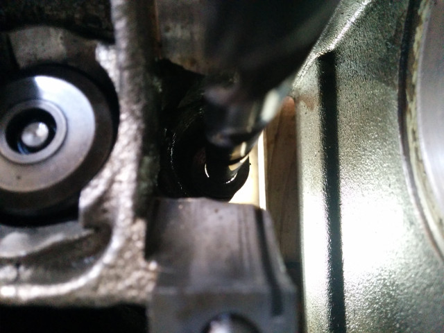 |
The hole is elongated, compressed and the face is not parallel with the deck.
Here, the compression is 0.25 mm on the lhs, and 0.6 mm on the rhs.
The washer (20 mm dia) did not cover the entire faced area (21.5 mm dia)
The step is clear to see.
All washers had to be levered out of their indentations. Some easier than others.
|
The elongation is clearly seen when backlit and a 10mm drill shank inserted |
| 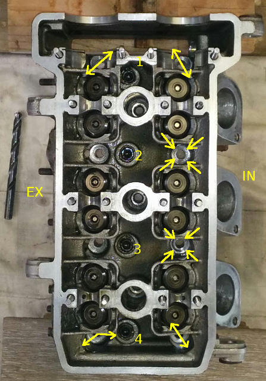 |
Six of the eight head stud holes were deformed. The type of deformation depended on their position in the head.
The corners deformed in the direction of the thinnest wall, where it moved out and compressed furthest.
The two inner holes, on the inlet side mushroomed inwards, grabbing their stud from all directions.
They compressed more on the side of the exhaust ports, presumably because the wall to the water jacket was thinner there.
The two inner holes on the exhaust side had no pronounced deformation, although some inclination was found. Presumably
the wall thickness around these two holes was higher than around any of the other holes.
|
How to Fix it?
The way forward wasn't clear. If the holes were filed back to round, material would be lost and the holes weakened further.
Advice was needed so emails were sent to Gianluca at the factory and also to Alex at Maniac Motors, Nuremberg, and to Matt at Bennetts,
Barnsley. Matt hadn't seen it before but Alex had. Alex also pointed out that Gianluca no longer worked for Benelli, so I repeated
the message on their website contact page and as a facebook message. I have had no response from either source.
My brother Rod was also made aware of the problem and he recalled a similar issue with the Ford Side-Valve V8, commonly known as the
Ford Flathead. This was produced from 1933 to 1953, and had used aluminium heads from 1934 in Ford's passenger cars. The engine design
had a problem with overheating which was especially critical with the aluminium head as the alloy used was soft and deformed when overheated
to such an extend that no coaxing with levers would budge them, and often the head gasket would blow because the head nuts came loose. They
had to be chiselled off and replaced with cast iron heads from the truck fleet where the extra weight was not an issue.
Alex replied that the casting in the original heads was indeed too soft and recommended not drilling them out as they will return to the
current state after 10,000 kms. Some had even failed afterwards, breeching the oil and water galleries.
He suggested using a steel washer with a skirt that slipped into the hole to prevent deformation.
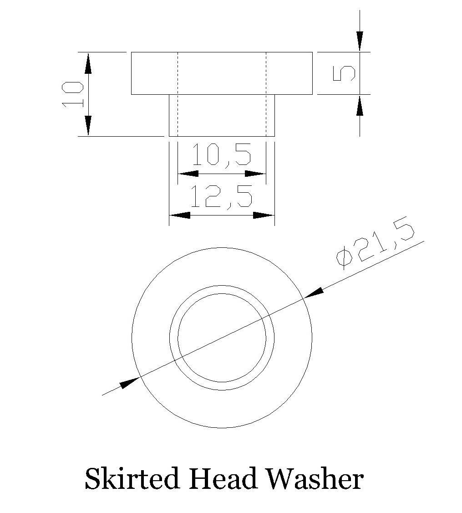
This has merit although it would require removing more head material, which might not be a problem given that any
rotational force would act on the weakest side, towards the strongest at the base of the skirt. It is not clear if Alex has actually
used this skirted washer to fix the faulty heads he has seen, or whether it is just an idea. An email has been sent asking for
confirmation.
As a matter of interest, the part number of the Tornado head is R180213001000, while that of the RS is R180213001001, so it has been
re-designed, presumably to correct this issue. Curiously, the TNT sport head part number is R300013001000, so it also has seen a
re-design, but probably to increase the combustion chamber volume of the longer stroke 1130 engine.
The Adopted Process
To install a skirted washer the stud holes must be bored out to take the skirt, and this would require the manufacture of a
precision tool, something that will take some thought and effort. As an interim measure, a new set of washers were turned that maximized
the available thickness and diameter in order to improve the resistance to bending and the surface area, but the only means they have to
limit vertical rotation is the M10 stud thread acting on the side of the washer's 10.0x5 hole.
The distortion in the holes was only in the top 3 mm, so rolling it back to 10 mm was possible although it would work harden the alloy.
A 10 mm rod with a 1 degree taper to 9.5 mm was manufactured and used from the top of the hole to swage the alloy back until the 10 mm shaft
could drop through. This was done on all of the deformed holes including the elongated ones and found to be a relatively easy process. A
round file was used to finish the job.
Another tool was manufactured to square off the hole surface, and widen it to it's maximum diameter of 21.5 mm.
| 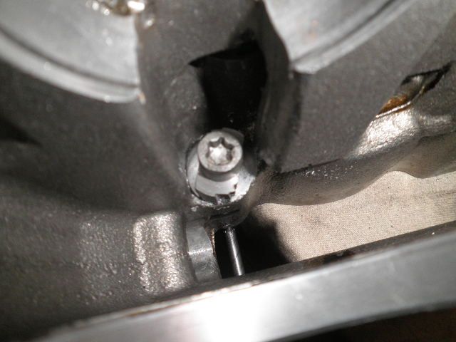 |
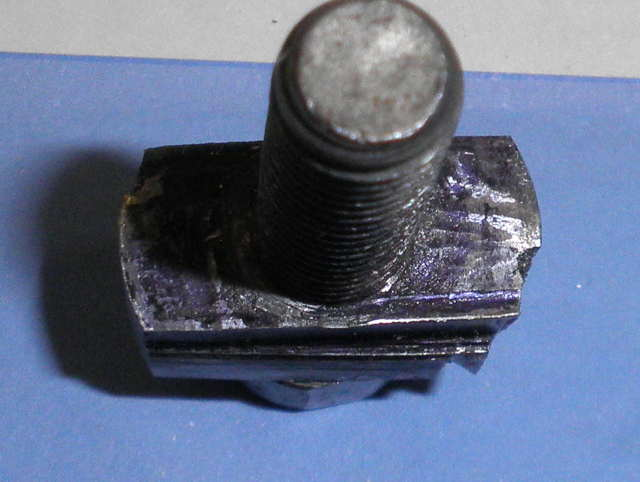 |
The view from the top of the facing tool in action.
The cutter has four main edges. |
The horizontal edges of the cutter are seen closest to the reader on the right
& furthest on the left. |
| 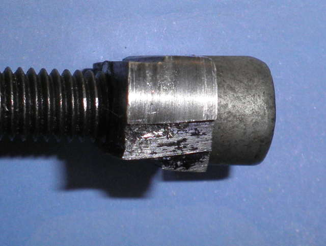 |
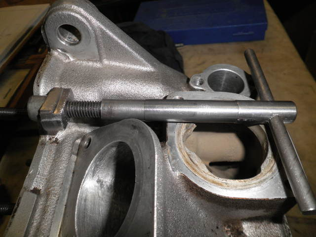 |
| There are two edges on the leading edges of each side of the cutter. |
The facing tool consists of a threaded Tee bar, a threaded cutter and an M8 screw |
| 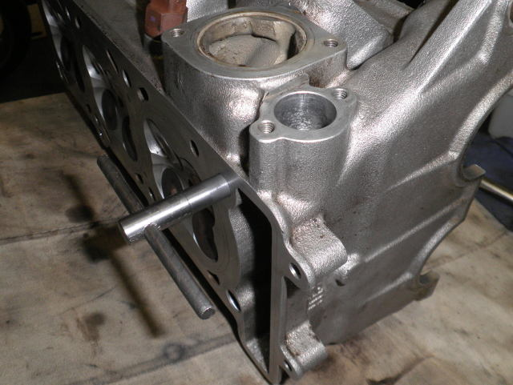 |
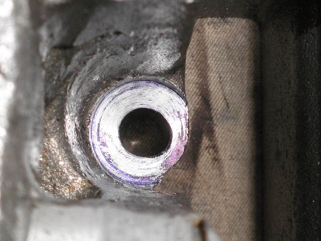 |
Rotating clockwise tightens the cutter to the Tee bar.
Once the sides of the hole are cut, force is applied while rotating to cut the face square |
Hole #1 Exhaust side completed. Marking blue shows the low areas. |
| 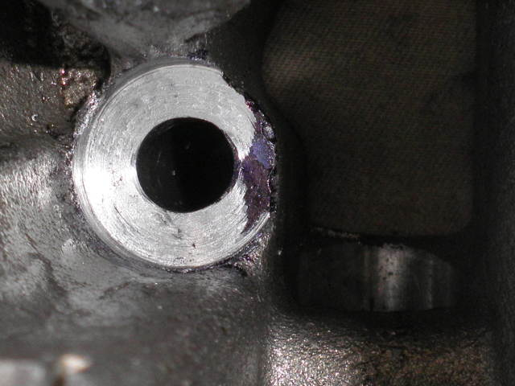 |
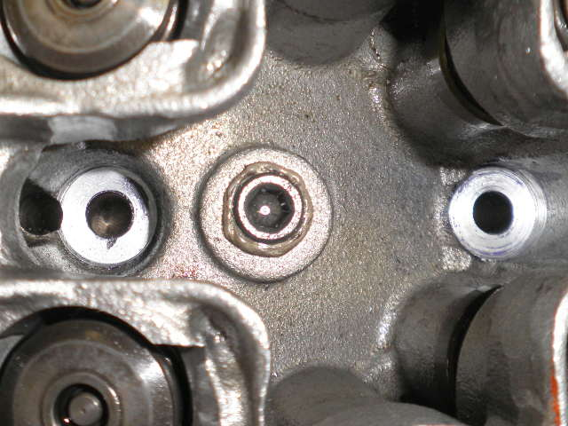 |
| Hole #1 Inlet side completed - not willing to take any more off. |
#2 Holes completed |
| 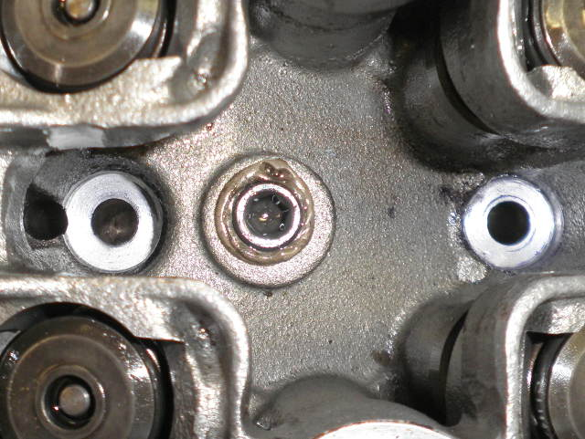 |
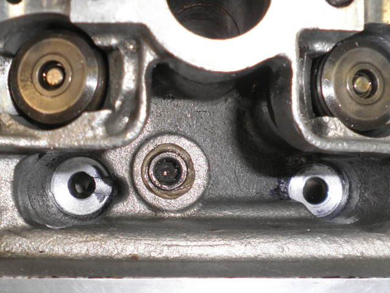 |
| #3 Holes completed |
#4 Holes completed |
 |
A new set of 21.5x10x5 mm washers were made, to be used instead of the 20x10.4x2 originals.
These will be supported by 24% more material and being more than double the height will be less likely to bend.
There is also a step on the inside edge of the washer to ensure that
less pressure is brought to bear on the inside of the hole surface.
The additional height will resist vertical rotation when the stud makes contact with the washer bore hole. |
Further Work
If this doesn't halt the alloy migration, skirted washers will be next. Hopefully though, the head won't need
dismantling for a good long time.
BACK